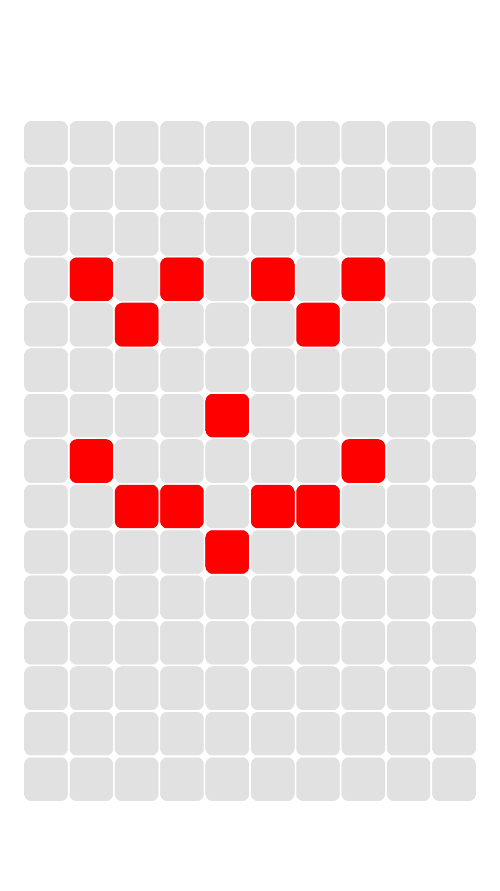
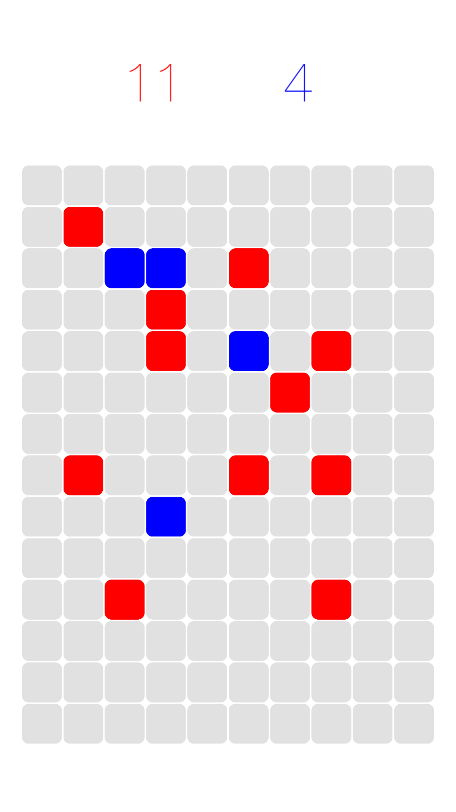
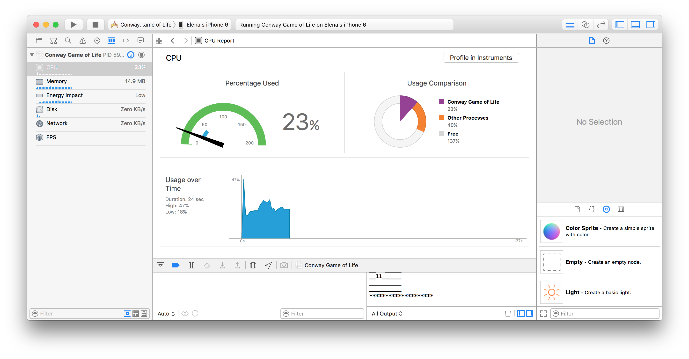
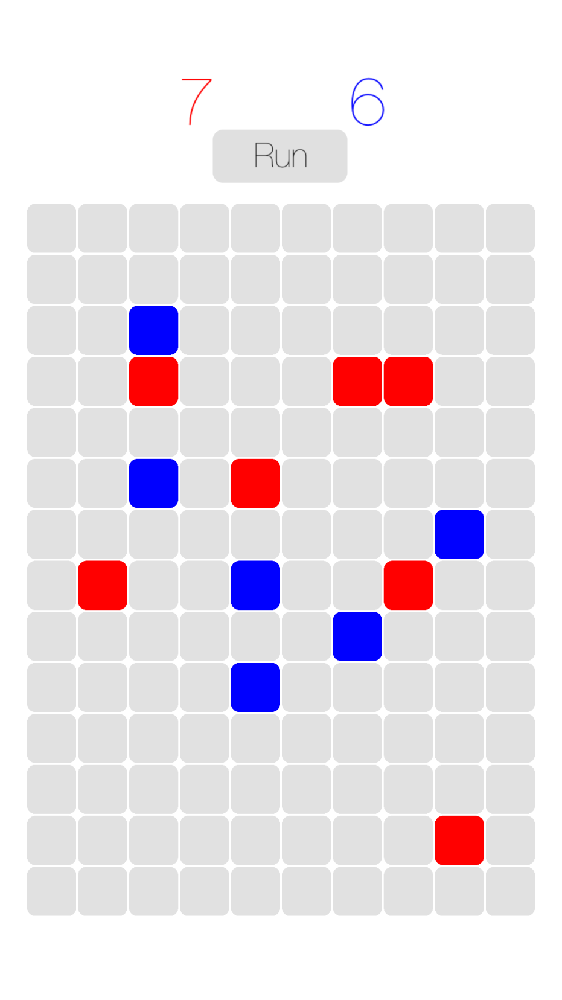
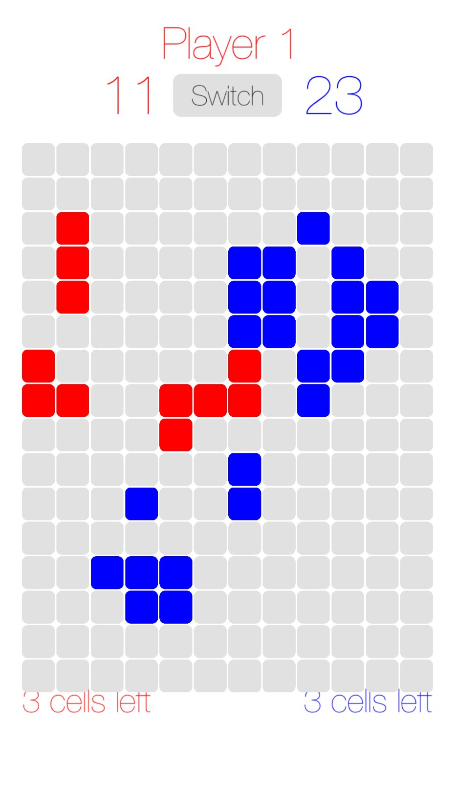
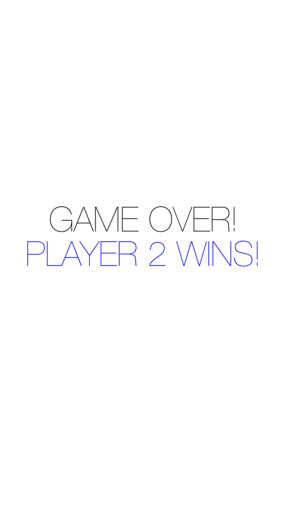

Senior Project Blog
by Shannon Shih and Elena Ariza
April 28, 2016
We experimented with coding Swift in XCode and learned out how use Github to share files between us. We also figured out the basic appearance and behavior of the game.
To start off, we created simple sprites (images such as the rounded rectangle, shown below) to be used in the game and figured out how to integrate it with our code. We also looked at tutorials such as Swiftris and other guides to help us figure out how to code and Swift. At the end of the day, we managed to get our app working and display one of the images we created using Adobe Illustrator:

April 29, 2016
We managed to get a grid composed of multiple cells to show up on the screen. When tapped, each cell changes color. We initially ran into problems in determining which cell was tapped, but we eventually realized it was the result of a rounding error. However, there was also a noticeable amount of lag between tapping a cell and changing the cell color. When Elena asked her brother about it, he realized that our program was repeatedly drawing cells onto the screen and not removing them. Since the program draws 60 times/second and there are 150 cells, 9000 cells are being drawn per second! No wonder our program is so slow. We're still trying to figure out how to solve the problem, but at least now we have a general idea of how to solve it.
May 2, 2016
Doing graphics efficiently is hard. We managed to get the app to update the screen by making the program take away old graphics and replace it with new, updated graphics. There's no longer a huge delay between tapping a cell and the cell changing color, although the CPU of the iPhone simulation is still increasing an alarming amount the longer we run the app. Hopefully we don't melt something with the heat of our computers when we run our app!
The Game of Life logic is coming along pretty well. For now, we're printing out the board to the console and using ascii text while we figure out the graphics. At first the board didn't seem to be changing with each new generation, but after realizing that Swift passes almost everything by value and not by reference, we figured out that all our program was doing was copying a cell from the board, modifying it, and not actually changing the board directly. Once we started modifying the board directly, the board seemed to behave as we expected.

May 3, 2016
The graphics-CPU problem appears to have been solved now. We found that we were adding and removing the cells from the screen 60 times/second, which was unnecessary because we only needed to update the screen when the user tapped it. This decreased the CPU utilization drastically (90%->10%), and the decrease in lag was noticeable when we tested it on Elena's iPhone and the iPhone simulators on our computers. In addition, Elena's brother suggested changing the image (called the sprite) of the cell rather than removing the cell, creating a new one, and adding it. From there on, it was trivial to cycle the color of the cell from red (player 1's color), blue (player 2's color), and grey (dead) by tapping on it.
Given our progress, we've started discussing other game ideas. We were worried that Game of Life would be too hard because it's almost impossible to predict the state of the board more than a few generations in advance. We looked at other games such as Hive, Warlords, and Super Tribes. After discussing ideas for a while, here's what we came up with (we may not include any or only some of these ideas):
- Each player can place automated "pieces" on the board. Automated pieces will move and fight against enemy pieces without involvement from the player
- Players must place "brick" pieces that form pathways in which "soldier" pieces can travel on top of
- Each "brick" is owned by the player who placed them
- "Soldiers" lose health if they move onto enemy "bricks" and die when they have no health
- If two enemy "soldiers" try to move onto the same "brick" piece, the "soldier" with the most health wins and the contested "brick" piece will then be owned by the winner "soldier"
- The goal of the game is to get as many "soldiers" onto the other side
- There can be different types of "soldier" pieces that have different amounts of health and ways of moving
May 4, 2016
Today we outlined some goals to accomplish by next week in our meeting with our supervisor, Mr. Steinberg:
- Implement player mode switching
- Design graphics to make it clear what player mode game is currently in
- Make board actually show progress of Game of Life
It also took some fiddling, but we finally figured out how to display text on the screen! We color coded it in each player's colors to make it clear which number corresponds to what player. The numbers keep track of the number of cells on the board in that player's color.

May 5, 2016
Today was the day of the AP BC Calculus exam, so we didn't accomplish much. However, we were able to confirm the CPU usage of our app by monitoring Elena's iPhone:

May 6, 2016
Today, we managed to add a rudimentary "Run" button to the screen that paused and played the progression of Game of Life onscreen. Because UIButtons didn't exist in our SKNode environment, we had to draw a rectangle using CGRect and detect whether a tap was inside or outside the boundaries of the rectangle instead. It was surprisingly tricky to center the button in the screen because there were no functions to remap the anchor point to the center of the rectangle. Instead, the position of the button was relative to its bottom left corner.
Animating the button was also surprisingly challenging. Despite our best efforts, we could only get the color of the button to abruptly change from grey to green, rather than transitioning gradually between the two colors. However, coding the logic behind the button was very easy.

May 9, 2016
After some discussion, we decided on having game progress in the following sequence: Player 1 places cells -> player 2 places cells -> 1 generation passes. Each player can choose to waive their turn to save up more cells. It also turns out that we forgot to create a new "nextGeneration" board that would store what the board would look like in the next generation so that game of life would behave as expected. Before we included the nextGeneration board, cells would sometimes die before they were counted as a neighbor, leading the game to believe that all the cells had no neighbors and thus died. It's fixed now, and it's pretty cool to see the patterns of cells dance across the screen.
May 10, 2016
We've finished implementing most of the basic game mechanics for our initial skeleton game idea, which was to allow 2 players to play game of life turn by turn. It's quite fun to try and create strategies as you get used to the game. The specific features we added were:
- Player mode switching
- limit to the number of cells each player can place (each player gets 3 new cells to place each turn, but they can save up cells)
- Game of life updates by one generation each time the game switches between players
- A game over screen that shows the winner and loser when one of the players run out of cells on the board
 